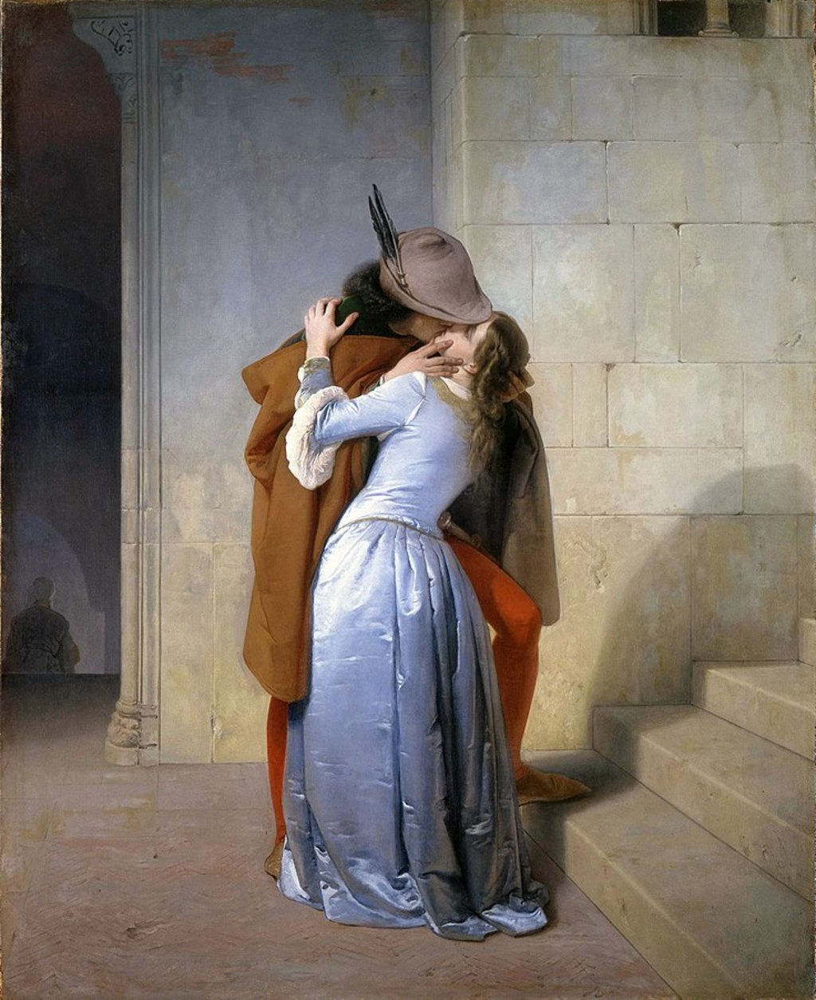
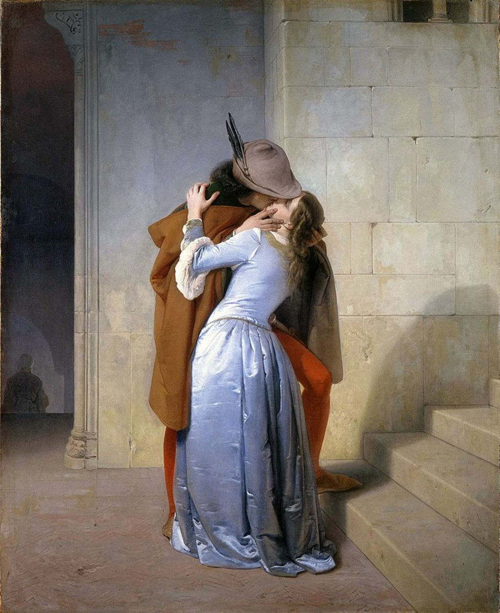

Francesco Hayez
- Nacimiento:
10 de febrero de 1791; Venice, Italy
- Fallecimiento:
21 de diciembre de 1882; Milan, Italy
- Género:
Retrato, Pintura de Historia
- Campo:
Pintura
- Institución:
Academia de Bellas Artes de Brera
Este artista es considerado una de las figuras más relevantes en el arte italiano en la época del romanticismo, pintando varias cosas referentes a la historia. Provino de una familia pobre, pero, con un padrino que coleccionaba y comerciaba con arte, poseía una cantidad cuantiosa de dinero. Gracias a la gran pasión por el arte que tenía Francesco y por el dinero de su padrino, este le financió una carrera de arte, que culminó ganando un premio en la Escuela de Venencia para estudiar en Roma. Esta ciudad estaba desarrollando el romanticismo, varios artistas la consideraban el mejor lugar para estudiar y poder dejar volar su imaginación. En Roma tuvo como maestro a Canova, esto fue así hasta que en 1814 tuvo un enfrentamiento con motivos sentimentales y se fue a vivir a Nápoles, donde en 1882 murió con 91 años.